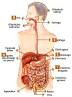

Sistema Digestivo
Regresar
El aparato digestivo es el conjunto de órganos encargados del proceso de la digestión, es decir, la transformación de los alimentos para que puedan ser absorbidos y utilizados por las células del organismo.
La función que realiza es la de transporte (alimentos), secreción (jugos digestivos), absorción (nutrientes) y excreción (mediante el proceso de defecación).
El proceso de la digestión es el mismo en todos los animales monogástricos: transformar los glúcidos, lípidos y proteínas en unidades más sencillas, gracias a las enzimas digestivas, para que puedan ser absorbidas y transportadas por la sangre.